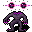

コグニトゴーント Cognitogaunt
英語版 CrawlWiki の記事「Cognitogaunt」(0.34 向け、2026-01-24 版)の翻訳です。原文の著者は編集履歴をご覧ください。
グールをすべて見るにはグールの一覧を参照。
| コグニトゴーント n  | |
|---|---|
| HP | 51-104 |
| HD | 14 |
| XP | 963 |
| 速度 | 10 |
| AC | 6 |
| EV | 16 |
| 意志力 | 80 |
| 攻撃1 | 28（爪: 混乱） |
| 攻撃2 | 22（接触: 苦痛）
|
| 耐性 | rC+ rPois+++ rDrown rMiasma rN+++ rTorm |
| 弱点 | 神聖 |
| 生息地 | 陸上 |
| 知能 | 人間並み |
| 使用 | 扉を開ける |
| 分類 | アンデッド |
| 体格 | 小さい |
| 種類 | コグニトゴーント、コグニトゴーント |
| フラグ | 邪悪 呼吸しない ゾンビ化不可 霊視 話す |

| しなびた首なしの死体で、通常の死霊術ではなく、死んだ星々の哀しげな悪意によって動いている。体の動きとはばらばらに浮かぶその霊的な眼は、犠牲者の心を容赦なく穿つ。 |
基本情報
コグニトゴーントは、地下墓地とアビスにいる、星から生まれた超能力のグールだ。主に魔術師と、薬を飲めないキャラクターにとって脅威になる。脳喰らいを唱える頻度が極めて高く、行動の38%をこれに費やして、打擲の一撃の半分ほどの抵抗できないダメージを与えながら、あなたの MP をごっそり奪っていく。近接では、ブランドつきの攻撃で混乱させてくるうえ、rN の有無も問われる。苦痛のブランドがついた接触は、負のエネルギーへの耐性をまったく持たない相手に、AC を無視して最大28のダメージを与える。
呪文
小技
- 幽体蛾と比べれば魔力を奪う勢いはずっと弱いが、出てくる頻度が高いので、地下墓地を戦い抜くうちに MP をそれなりに削られるものと思っておこう。そうなると、たとえばアンデッドの解呪を唱える魔力がほとんど残らないこともある。仲間を呼ぶ呪文や、射程の長い高レベルの妖術なら、MP がいくらか残っているうちに素早く倒せる。
- 打たれ弱いキャラクターや、AC が高く EV が低くて近接で戦うつもりのキャラクターは、rN の源を少なくとも1つ身につけておけば、AC を無視する苦痛の追加ダメージを防げる。
変更履歴
- コグニトゴーントは0.34で追加された。